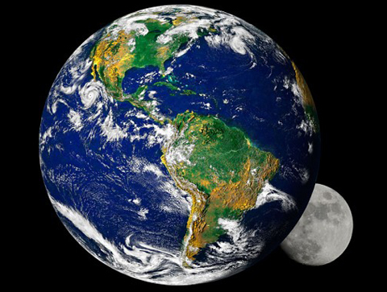

Mặt trăng có thể từng là một phần của địa cầu
12:00 - 20/6/2022
Trái đất và mặt trăng từng là một khối cầu trước khi trái đất va chạm với hành tinh khác, hai nhà khoa học Mỹ khẳng định.
Nguồn gốc của mặt trăng và nguyên nhân khiến nó bay xung quanh trái đất là một trong những bí ẩn lớn nhất đối với giới khoa học trong nhiều thế kỷ. Giả thuyết được nhiều người chấp nhận nhất là: Khi hệ Mặt Trời ra đời, một hành tinh đã va chạm với địa cầu và khiến một lượng vật chất khổng lồ của hành tinh đó văng ra. Khối vật chất ấy xoay quanh trái đất và trở thành mặt trăng. Matija Cuk, một nhà nghiên cứu của Viện SETI tại Mỹ, và giáo sư Sarah Stewart, một chuyên gia về hành tinh của Đại học Harvard, vừa công bố giả thuyết mới của họ về nguồn gốc của mặt trăng. Theo giả thuyết này, mặt trăng từng là một phần của trái đất. Khi trái đất va chạm với một hành tinh khác, vật chất của trái đất văng ra và tạo nên mặt trăng, Telegraph đưa tin.
Trong một bài báo trên tạp chí Science, Stewart và Cuk khẳng định giả thuyết của họ giải thích tại sao cấu tạo và thành phần hóa học của mặt trăng giống trái đất. “Địa cầu xoay nhanh hơn rất nhiều vào giai đoạn mặt trăng hình thành và một ngày hồi ấy chỉ kéo dài hai tới ba giờ”, hai nhà nghiên cứu lập luận. Do trái đất xoay quá nhanh, một vụ va chạm giữa nó với thiên thể khác có thể khiến một lượng vật chất lớn văng ra. Theo thời gian, trái đất xoay chậm dần tới vận tốc hiện tại nhờ tương tác hấp dẫn giữa quỹ đạo của nó quanh mặt trời và quỹ đạo của mặt trăng quanh nó.